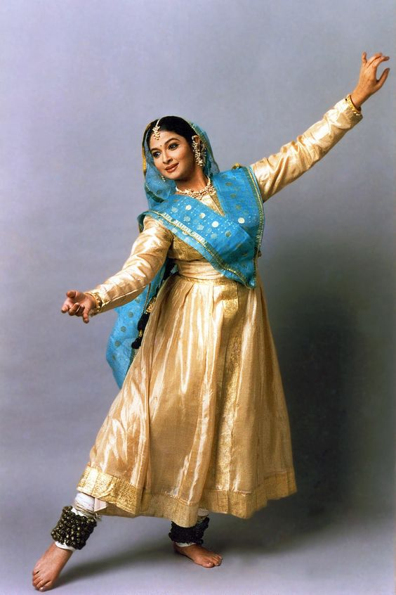

Kathak

Kathak is one among the eight Indian classical dance forms. The word 'Kathak' has its origins from the Sanskrit word Katha which means story. Kathak is an amalgamation of three arts- music, dance and drama. Both Hindu and Muslim rulers patronised this dance form giving it the status of a court entertainment. As such, this classical art carries with it the quaint charm of folk arts and is a blend of Hindu and Muslim traditions. Kathak originated in the villages of Northern India, when the natives shared their life experiences with each other. These people or Kathakkars (storytellers) travelled from village to village and kingdom to kingdom spreading their art. These Kathakkars would occasionally stop at the temples in these regions to take rest and here they began to enact stories from the great Indian epics and also started to stylise the art by giving it a classical touch.
The Pandits in the temples encouraged these Kathakkars to narrate the stories from the great epics like Mahabharata, Ramayana, Puranas and the Vedas. The Pandits thus set the foundation for Kathak's transformation into a temple dance where it focused on mythology, gods and goddesses.
With the entry of Mughals, who looted the assets from the temples, these Kathakkars also found themselves being absorbed into the Mughal courts. The focus of worship also changed and primary importance was given to the appeasement of the Emperor. The changes that came with the establishment of the Mughal Empire were also mirrored in Kathak. Manuscripts, music, jewellery, costumes and techniques of the dance also evolved and underwent rapid changes. Urdu language was introduced into the art form.